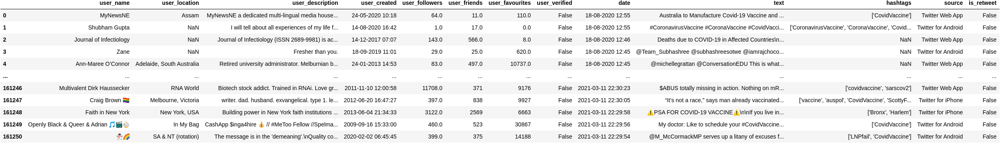
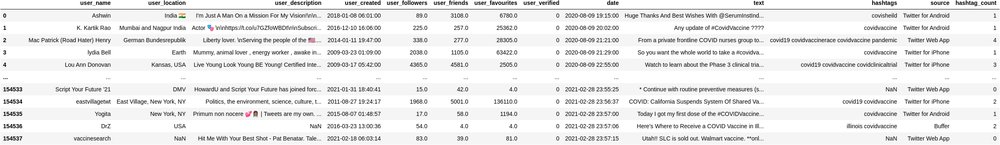
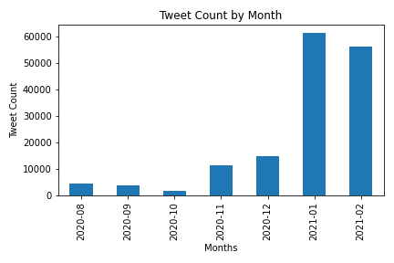
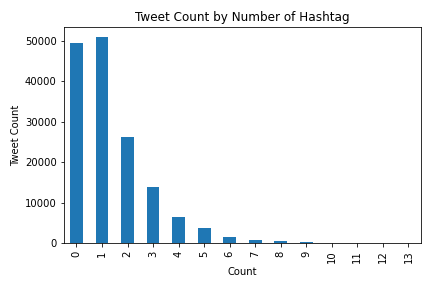

For the CVT dataset, we removed rows with any cell value that is inconsistent with the column name. For example, there are entries whose value for the user_verified column is neither True nor False but a random string as shown below.

Furthermore, we fixed the inconsistency in the format of DateTime values in the date column and expanded the list of hashtags into multiple attributes.

As mentioned earlier, we use data collected up until 2/28 23:59:00. Among all these data, the majority of data is generated in January and February 2021, with over 50000 tweets for each of the two months. For the rest of the months, the tweet counts range from less than 5000 to around 15000.

Hashtag-wise, aside from the hashtag #CovidVaccine, most tweets have 0 or 1 other hashtags, as shown below.

Data Preprocessing
To prepare our tweets data for training, we have established a series of preprocessing procedures:
Hyperlink Removal: Remove any hyperlink/URL in the tweet.
HTML Stripping: Strip off any HTML tag and header.
Hashtag Removal: Identify hashtags and either (1) remove the entire hashtag or (2) keep it by removing only the #.
Punctuation Removal: Remove all periods, commas, question marks, exclamation marks, colons, semi-colons, hyphens, and equal signs.
Lowercasing: Convert all letters to lowercase.
Extra Newline Removal: Remove any newline escape character (e.g. \n and \t).
Contraction Expansion: Use a pre-defined mapping to expand the contractions.
Mis-spelled Word Fix: Fix words that contain at least 3 repeated consecutive letter (since no words would contain letters repeating more than 2 times consecutively).
Emoticon Replacement: Use a pre-defined mapping to replace emotions to their names.
Emoji Replacement: Replace emojis with their names using library.
Stopword Removal: Remove stopwords defined by NLTK library.
Special Character Pattern Removal: Remove any complete pairs of parentheses, brackets, and braces.
Special Character Removal: Keep only alphabetical and numeric characters and spaces.
Supervised Learning
Dictionary-based Sentiment Analysis
Neural Network-based Sentiment Analysis
Unsupervised Learning
Latent Dirichlet Allocation (LDA) using Tomotopy
Next Step: GSDMM (Gibbs Sampling algorithm for a Dirichlet Mixture Model)
During our background research on topic modeling for social media text, we found that GSDMM could be more effective on shorter text such as social media posts and comments. Though we do see some interesting topics uncovered by LDA, we still plan to apply GSDMM on the tweets and see what kind of topics are formed.